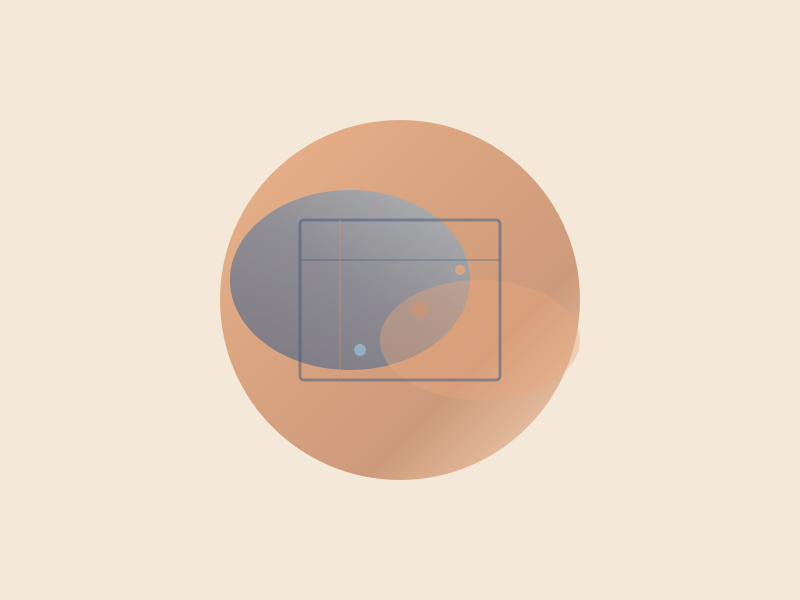
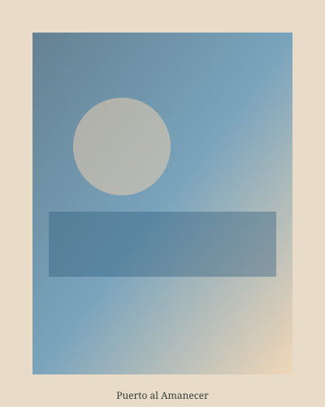
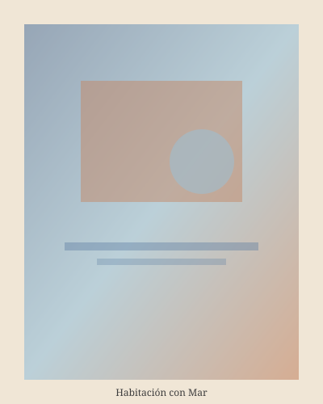
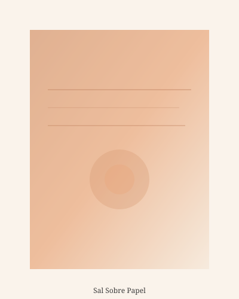
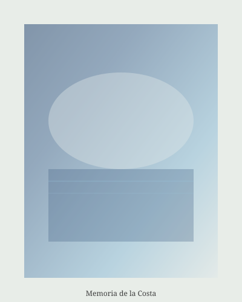
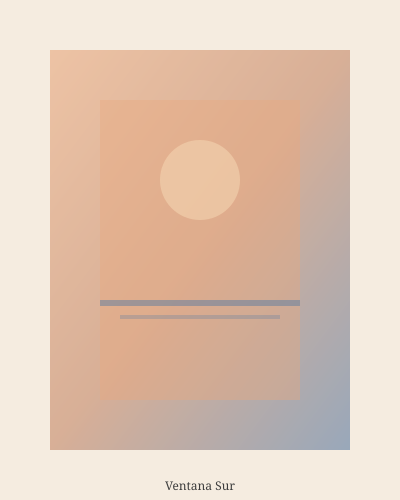
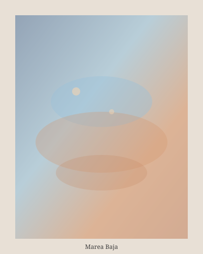

Luz de Otoño
—
Sala Ámbar, Madrid
Inauguración: 7 de noviembre, 19:00
"Color que recuerda la luz de la costa."
Próxima exposición: Luz de Otoño — Sala Ámbar, Madrid — desde el 7 de noviembre de 2026

Lucía pinta paisajes e interiores de gran formato que exploran la memoria y la luz del Mediterráneo. Formada en la Escuela de Arte de Madrid, expone en muestras colectivas por toda España desde 2017.
—
Sala Ámbar, Madrid
Inauguración: 7 de noviembre, 19:00
Galería Faro, Málaga
Inauguración: 12 de febrero, 20:00
Centro Cultural Norte, Bilbao
Inauguración: 20 de mayo, 18:30





